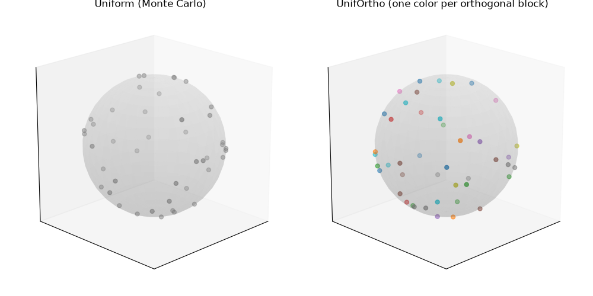
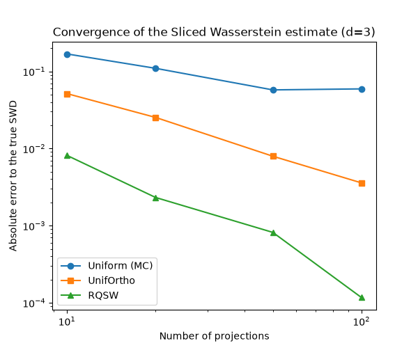
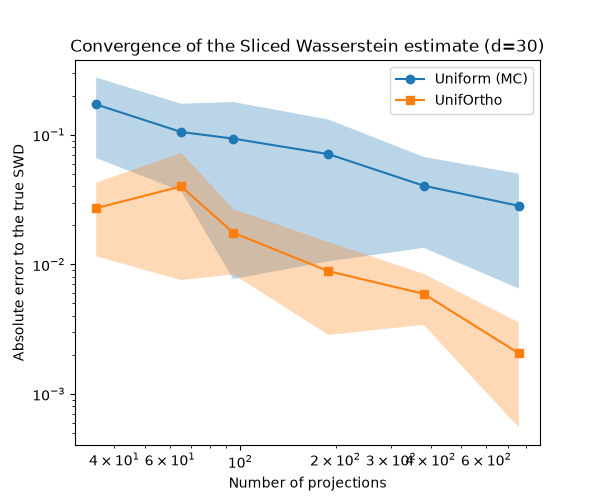

Note
Go to the end to download the full example code.
UnifOrtho Sliced Wasserstein in high dimension
This example illustrates the UnifOrtho sampling scheme for Sliced Wasserstein directions, introduced in [97] and recommended for large dimensions by a recent numerical and theoretical study [98], and compares it to the default uniform (Monte Carlo) sampling of slicing directions.
Sliced Wasserstein (SWD) approximates the Wasserstein distance by averaging 1D Wasserstein distances over projections onto random directions \(\theta\) drawn uniformly on the sphere. By default these directions are sampled purely at random (Monte Carlo), which introduces some variance in the estimate for a given number of projections.
UnifOrtho takes a different route that works in any dimension:
instead of drawing directions independently, it draws them in blocks of dim directions,
each block is a random orthonormal basis (a draw from the Haar measure on the
special orthogonal group \(\mathrm{SO}(\mathrm{dim})\)). Directions within a block are
therefore exactly mutually orthogonal, spreading them out much more evenly
than independent draws would.
We first visualize this block structure on the ordinary 3D sphere, purely for intuition – dimension 3 is precisely where QSW/RQSW should be preferred in practice, not UnifOrtho, as the convergence comparison right after the visualization confirms numerically. We then measure convergence to the true Sliced Wasserstein distance in a genuinely high dimension, where UnifOrtho is the recommended choice.
# Author: Samuel Vangu <samuelvangu0@gmail.com>
#
# License: MIT License
# sphinx_gallery_thumbnail_number = 1
import numpy as np
import matplotlib.pylab as pl
from mpl_toolkits.mplot3d import Axes3D # noqa: F401 (registers the 3D projection)
import ot
from ot.sliced import get_random_projections, get_random_orthogonal_directions
Visualize the block structure on the sphere (d=3, for intuition only)
We draw 15 directions on \(S^2\) with each scheme:
uniform: directions are Gaussian vectors normalized to unit norm (standard Monte Carlo sampling of the sphere) – no structure between the points.unif_ortho: 5 independent blocks of 3 mutually orthogonal directions each. Each block is colored separately below, so that same-colored points are exactly orthogonal to one another – this is the structure that is not visible in the uniform sample.
A translucent sphere is drawn behind the points purely to make the geometry easier to read.
Dimension 3 is used here only because it is the one human beings can actually look at. It is not the dimension UnifOrtho is recommended for – see the convergence experiment below.
d = 3
n_blocks = 15
n_projections = n_blocks * d
seed = 42
theta_uniform = get_random_projections(d, n_projections, seed=seed)
theta_uniortho = get_random_orthogonal_directions(d, n_projections, seed=seed)
# A plain unit sphere surface, drawn behind the scattered points below.
u_sphere = np.linspace(0, 2 * np.pi, 40)
v_sphere = np.linspace(0, np.pi, 20)
sphere_x = np.outer(np.cos(u_sphere), np.sin(v_sphere))
sphere_y = np.outer(np.sin(u_sphere), np.sin(v_sphere))
sphere_z = np.outer(np.ones_like(u_sphere), np.cos(v_sphere))
fig = pl.figure(1, figsize=(10, 5))
ax1 = fig.add_subplot(1, 2, 1, projection="3d")
ax1.scatter(
theta_uniform[0], theta_uniform[1], theta_uniform[2], c="gray", s=25, alpha=0.8
)
ax1.set_title("Uniform (Monte Carlo)")
ax2 = fig.add_subplot(1, 2, 2, projection="3d")
block_ids = np.repeat(np.arange(n_blocks), d)
ax2.scatter(
theta_uniortho[0],
theta_uniortho[1],
theta_uniortho[2],
c=block_ids,
cmap="tab10",
s=25,
alpha=0.9,
)
ax2.set_title("UnifOrtho (one color per orthogonal block)")
for ax in (ax1, ax2):
ax.plot_surface(
sphere_x, sphere_y, sphere_z, color="lightgray", alpha=0.15, linewidth=0
)
ax.set_box_aspect([1, 1, 1])
ax.view_init(elev=20, azim=45)
ax.set_xticks([])
ax.set_yticks([])
ax.set_zticks([])
pl.tight_layout()
pl.show()
# Every triple of same-colored points on the right is an exact orthogonal
# basis of R^3 -- three mutually perpendicular directions. The uniform
# sample on the left has no such guarantee: any two of its points can end
# up arbitrarily close to each other.

Convergence at d=3: UnifOrtho is not the right tool here
Before moving to high dimension, it is worth checking numerically that UnifOrtho is indeed NOT the best choice at d=3 – randomized spiral points (RQSW, see the companion example “Quasi-Monte Carlo Sliced Wasserstein in 3D”) are. We use the same exact closed-form reference as below (a pure translation).
from ot.sliced import get_projections_spiral # noqa: E402 (kept local to this section)
d3 = 3
rng3 = np.random.RandomState(1)
delta3 = rng3.normal(size=d3) * 1.2
Xs3 = rng3.uniform(-2, 2, (100, d3))
Xt3 = Xs3 + delta3
sw_true3 = np.linalg.norm(delta3) / np.sqrt(d3)
n_proj_list3 = [10, 20, 50, 100]
n_trials3 = 10
errors3 = {"uniform": [], "unif_ortho": [], "randomized_spiral_qmc": []}
for n_proj in n_proj_list3:
row = {k: [] for k in errors3}
for t in range(n_trials3):
for method in errors3:
val = ot.sliced_wasserstein_distance(
Xs3, Xt3, n_projections=n_proj, sampling_slices=method, seed=t
)
row[method].append(abs(val - sw_true3))
for method in errors3:
errors3[method].append(np.mean(row[method]))
pl.figure(2, figsize=(6, 5))
for method, marker, label in [
("uniform", "o-", "Uniform (MC)"),
("unif_ortho", "s-", "UnifOrtho"),
("randomized_spiral_qmc", "^-", "RQSW"),
]:
pl.plot(n_proj_list3, errors3[method], marker, label=label)
pl.xscale("log")
pl.yscale("log")
pl.xlabel("Number of projections")
pl.ylabel("Absolute error to the true SWD")
pl.title("Convergence of the Sliced Wasserstein estimate (d=3)")
pl.legend()
pl.show()
# RQSW is consistently the most accurate here, UnifOrtho a clear second
# (still better than plain uniform sampling, but not the recommended
# choice), and uniform sampling the least accurate -- exactly the
# low-dimensional ordering the literature [99] describes.

Convergence to the true Sliced Wasserstein distance, in high dimension
As with the QSW/RQSW example, we build Xt as a pure translation of
Xs by a fixed vector \(\delta\), which makes the true Sliced
Wasserstein distance known exactly, with zero approximation error left
except from the number of projections:
This time we work in dimension 30 – the regime UnifOrtho is recommended
for . The list of projection counts below is deliberately chosen to never be a multiple of d:
when n_projections is an exact multiple of 30, UnifOrtho draws a
whole number of complete orthogonal bases, which for this particular
translation experiment happens to recover the exact answer up to
floating-point precision (an identity, not an approximation) – an
interesting fact in its own right, but not representative of the
typical case we want to illustrate here.
d = 30
rng = np.random.RandomState(0)
n_samples = 200
delta = rng.normal(size=d) * 1.2
Xs = rng.uniform(-2, 2, (n_samples, d))
Xt = Xs + delta
# Exact reference: no approximation at all, at any cost.
sw_true = np.linalg.norm(delta) / np.sqrt(d)
n_proj_list = [35, 65, 95, 190, 380, 760] # all >= d, none a multiple of d
n_trials = 10
errors_uniform = np.zeros((n_trials, len(n_proj_list)))
errors_uniortho = np.zeros((n_trials, len(n_proj_list)))
for j, n_proj in enumerate(n_proj_list):
for t in range(n_trials):
sw_uniform = ot.sliced_wasserstein_distance(
Xs, Xt, n_projections=n_proj, sampling_slices="uniform", seed=t
)
sw_uniortho = ot.sliced_wasserstein_distance(
Xs, Xt, n_projections=n_proj, sampling_slices="unif_ortho", seed=t
)
errors_uniform[t, j] = np.abs(sw_uniform - sw_true)
errors_uniortho[t, j] = np.abs(sw_uniortho - sw_true)
mean_err_uniform = errors_uniform.mean(axis=0)
std_err_uniform = errors_uniform.std(axis=0)
mean_err_uniortho = errors_uniortho.mean(axis=0)
std_err_uniortho = errors_uniortho.std(axis=0)
pl.figure(3, figsize=(6, 5))
pl.plot(n_proj_list, mean_err_uniform, "o-", label="Uniform (MC)")
pl.fill_between(
n_proj_list,
mean_err_uniform - std_err_uniform,
mean_err_uniform + std_err_uniform,
alpha=0.3,
)
pl.plot(n_proj_list, mean_err_uniortho, "s-", label="UnifOrtho")
pl.fill_between(
n_proj_list,
mean_err_uniortho - std_err_uniortho,
mean_err_uniortho + std_err_uniortho,
alpha=0.3,
)
pl.xscale("log")
pl.yscale("log")
pl.xlabel("Number of projections")
pl.ylabel("Absolute error to the true SWD")
pl.title(f"Convergence of the Sliced Wasserstein estimate (d={d})")
pl.legend()
pl.show()
# UnifOrtho consistently reaches a given accuracy with markedly fewer
# projections than uniform sampling in this high-dimensional setting --
# the opposite of the low-dimensional case above, where RQSW is the
# better choice. As a rule of thumb from the literature [98, 99]: prefer
# RQSW in low dimension, UnifOrtho in high dimension, and either may do
# in between. Since UnifOrtho remains an unbiased, stochastic estimator
# (like RQSW), it is also a drop-in replacement for uniform sampling in
# stochastic optimization settings.

Total running time of the script: (0 minutes 2.603 seconds)